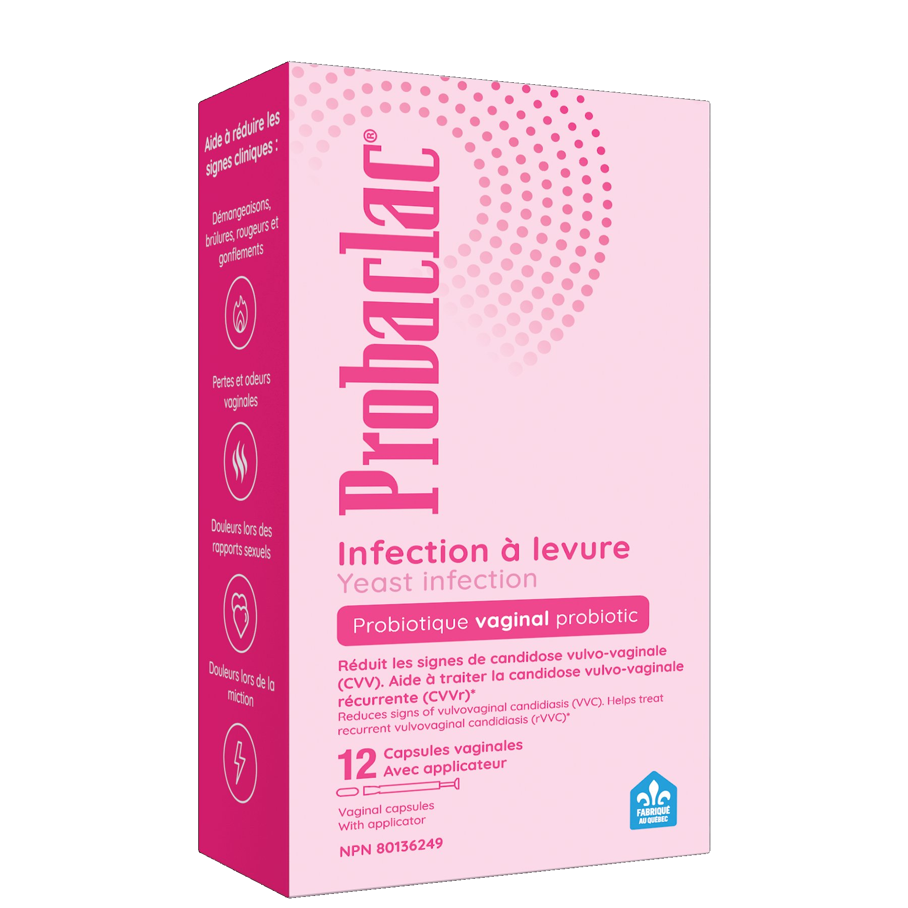

Probaclac targets the problem at the source: itching, burning, discharge and vaginal odor. 90 % of women report improvement after the first course of treatment.

The only intravaginal probiotic specifically designed to treat and prevent recurring yeast infections.
Thanks to its exclusive strain Lactiplantibacillus plantarum, Probaclac rebalances the vaginal flora and reduces symptoms of vulvovaginal candidiasis (VVC). No refrigeration required.
Relieves symptoms
Yeast infections (vaginitis) are caused by an imbalance in the vaginal flora: good bacteria decline and Candida proliferates. Probaclac targets the problem at the source.
Study of 30 women with bacterial or fungal vaginitis. 6 days of intake followed by 9 days of follow-up.
After oral fluconazole pre-treatment, three monthly cycles at the end of the menstrual period.
Observed in the De Seta 2014 study, versus 68% in the comparator group.
After 90 days, versus 40% in the comparator group.
In the Cianci 2016 study, versus 47.8% in the control group.
Replace these cards with your 4 UGC testimonial videos.
Marie-Eve, 32 · Montreal
Stephanie, 28 · Quebec City
Andreanne, 35 · Laval
Genevieve, 41 · Sherbrooke
Everything you need to know before starting your treatment.
Throughout production, priority food allergens are avoided.
6 days. One capsule per day. Studied in 800+ women across 6 clinical trials. 91% relapse-free after 4 months.
Available in pharmacies and on Amazon.ca · Made in Quebec